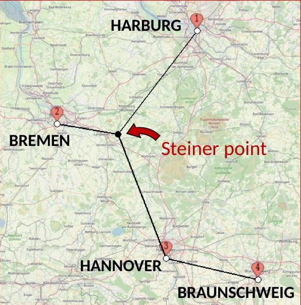
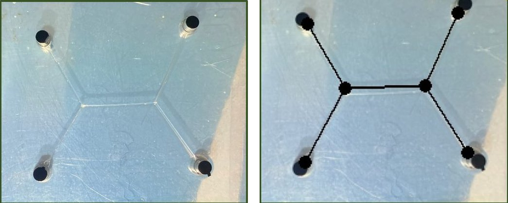
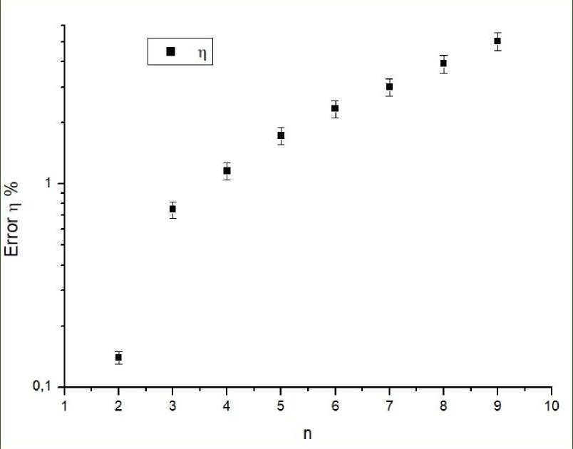
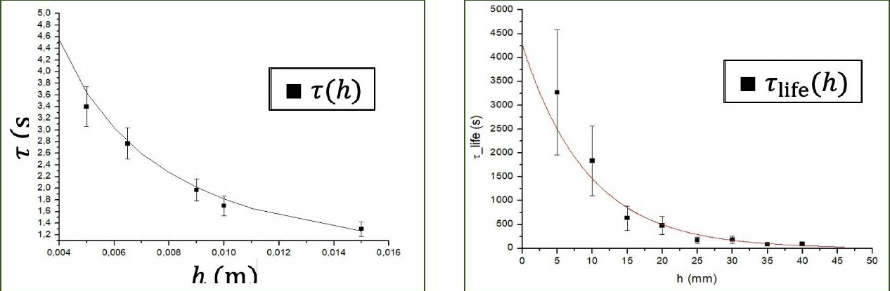
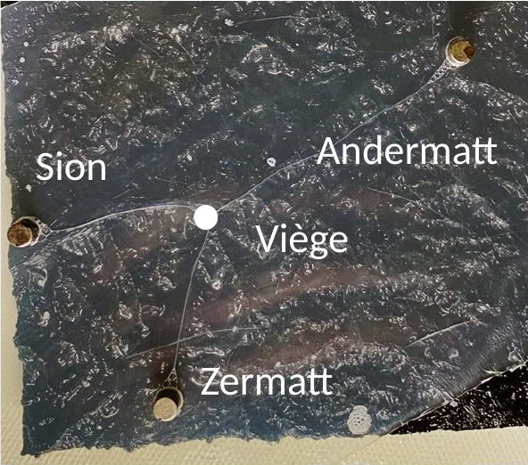
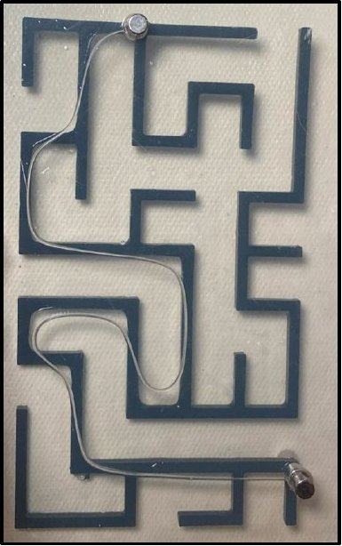

The questionIf you let water flow in a maze, you end up with a physical maze-solving algorithm. Many other algorithms and computations can be done with physical systems. Create a water-based computer (without electronics) that solves an NP-hard problem.
Take a few cities and ask for the shortest road network that connects them all. You may add extra junctions anywhere you like. These junctions are called Steiner points, and the question is the Steiner tree problem.
It is NP-hard. This means it is at least as hard as every problem whose answers can be checked quickly. A maze is much easier. A computer solves it in a number of steps that grows only like a power of the maze's size. For the Steiner tree, the best algorithm we found (Fomin et al.) needs about 7.29n operations for n cities, so each extra city multiplies the work by more than 7.

Our computer uses soap films, thin sheets of soapy water. A soap film pulls itself in to make its area as small as possible, because its energy is its surface tension times its area.
We hold the film between two parallel plexiglass plates, with one peg between the plates for each city. The film stands upright between the plates, so its area is the gap between the plates times its length. The smallest area is therefore the shortest network. Where films meet, they meet three at a time at 120° angles, the same rule that shortest networks obey.

We compared the length of the film with the exact shortest length from our simulation, with 2 to 9 pegs and 10 runs for each number. The average gap grows with the number of pegs. It is under 1% with 3 pegs and about 5% with 9. We attribute it to friction of the film on the plexiglass, on the pegs and in the air.
A film can also get stuck in a longer arrangement. This is a local minimum of its energy, like a ball resting in a small dip instead of the deepest valley. Disturbing the film, for example by shaking the plates, can free it. The shortest arrangement is the most likely outcome, so the computer gives the right answer most of the time rather than every time.

Average gap between the film's length and the shortest length, against the number of pegs n. Log scale, 10 runs per point.
Five pegs. The film leaves a longer arrangement and settles into a shorter one with three-way junctions.
A useful computer must settle quickly and last long enough to be read. To measure the settling time, we tilted the top plate back and forth. The film switched between a straight line and a curve. Each time, the distance left to its new shape shrank by a factor of about 2.7 every 2.77 ± 0.16 s. This time is called the relaxation time.
A wider gap between the plates makes the film settle faster, but it also makes it burst sooner. We used the soap concentration beyond which more soap no longer lowers the surface tension (the critical micelle concentration), and a gap of 5 mm. With these choices the film settles in under 3.5 s and lasts more than 2 minutes.

We placed pegs at the 13 largest French cities. For 13 cities, the best algorithm we found needs about 1.6 × 1011 operations, about 3 minutes for a 1 GHz processor (a billion operations per second). The film settles in under 3.5 s.
The same setup can take more into account. Round zones that the film cannot cross act as lakes. Changing the gap between the plates from place to place gives each place a cost, and the film then bends like light entering glass (Snell's law). On a plate shaped like the Swiss Alps, with pegs at Sion, Andermatt and Zermatt, the film's junction fell near the small town of Viège (Visp). For distant cities such as Vancouver, Cairo and Sydney the Earth's curvature matters, which calls for a spherical setup. Since a maze is an easier problem, the films also solve mazes, and find the shortest way through.

Pegs at Sion, Andermatt and Zermatt on a plate shaped like the Swiss Alps. The junction (white dot) falls near Viège.

A film between two pegs in a maze follows the shortest path through it.